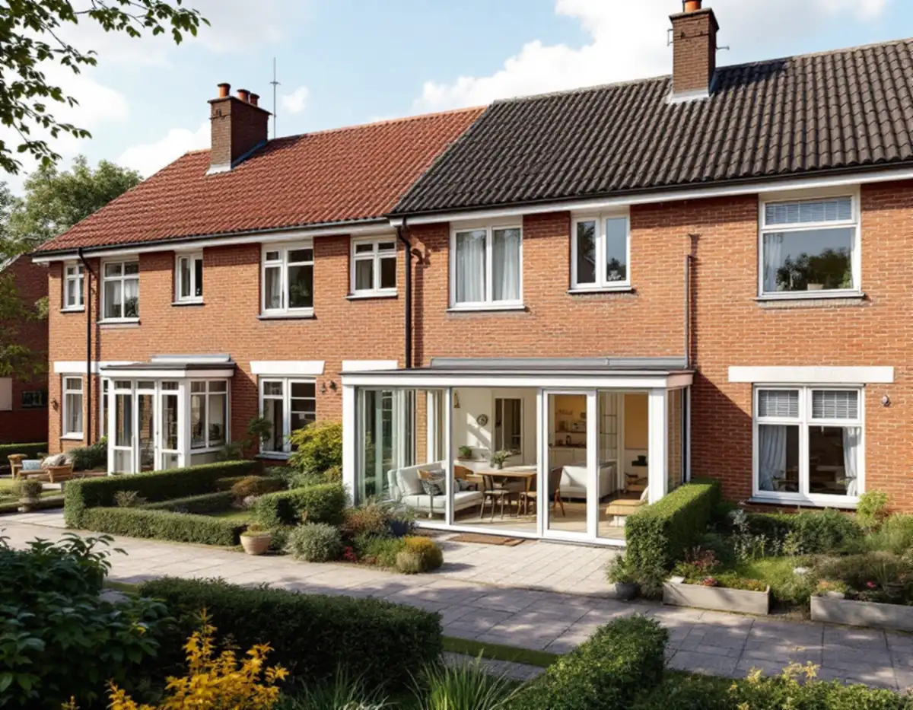
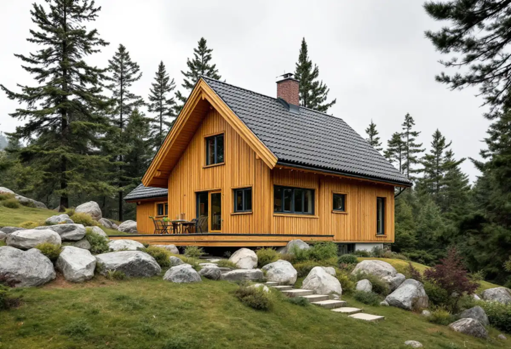
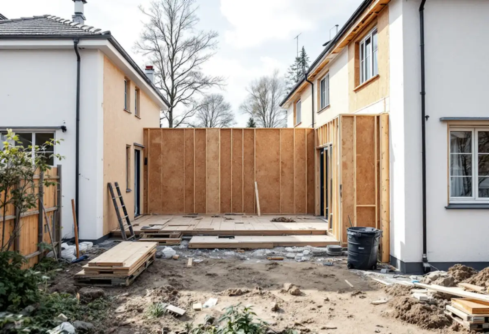

Området
Villastad eller gruppbyggt radhusområde och Stadsmuseets klassificering.

I Hägersten ligger två helt olika slags småhusområden nära varandra: villastaden i Mälarhöjden och de gruppbyggda rad- och kedjehusen i Fruängen.
Beskriv jobbet kort.
Något blev fel. Kontrollera uppgifterna eller ring 08 12 410 276.
Vi tittar på jobbet på plats innan du får offert.
Du ser vad som ingår och vad det kostar.
Vi drar av ROT direkt och sköter ansökan.
Geal Entreprenad AB, Bromma. Org.nr 559303-7566.

Vad som är rimligt att bygga till skiljer sig mycket mellan dem. Geal Entreprenad AB bygger till villor och radhus i hela Hägersten och utgår från vilket område huset ligger i.
Stadens skrift Varsam utveckling av småhus- och villaområden delar in småhusen efter karaktär. Mälarhöjden är en villastad, där villasamhällen växte upp efter privata initiativ genom större markförvärv. I tabellen över stadens småhusområden är Mälarhöjden markerad både som kulturhistoriskt värdefull miljö och som område med detaljplaner med generösa byggrätter. Fruängen räknas till tunnelbanestäderna med gruppbyggda småhus.
För tunnelbanestäderna beskriver skriften radhus och kedjehus i enhetligt utformade husgrupper, ofta anpassade till terrängen med en suterrängvåning, och planer byggda på ABC-stadens tankar. Där är husgruppen själva karaktären. I villastaden är bebyggelsen i stället brokig, med hus från olika tider, och skriften visar en tillbyggd villa i Mälarhöjden som exempel.

En tillbyggnad på högst 30,0 kvadratmeter som inte går över taknocken kräver normalt inget bygglov. Men staden skriver att utökad lovplikt gäller om du bor i en särskilt kulturhistoriskt värdefull byggnad eller ett särskilt kulturhistoriskt värdefullt område, och då krävs bygglov även för en tillbyggnad som annars är lovfri. Stadsmuseets klassificeringskarta ger en första indikation, men du kan behöva kontakta Stadsmuseet för en bedömning.
I villastäderna råder staden dig att utgå från de ursprungliga husens volym, proportioner och takform och att ta tillvara karaktärsskapande material, kulörer och detaljer. I Mälarhöjden, där tabellen anger detaljplaner med generösa byggrätter, kan en större tillbyggnad prövas mot planen i ett bygglov. Vi tar fram ritningar för båda vägarna och visar vad skillnaden innebär.
Ett radhus delar vägg med grannen. Staden skriver att du behöver göra en anmälan och vänta på startbesked om tillbyggnaden påverkar byggnadens bärande konstruktion eller brandskydd. I en radhuslänga kan brandskyddet mot grannhuset påverka hur en tillbyggnad mot trädgården kan göras. Vi utreder det innan ritningarna är klara.
Ska tillbyggnaden närmare gränsen än 4,5 meter behövs ett skriftligt medgivande från berörda grannar. Det ska enligt staden innehålla fastighetsbeteckning, vilken typ av åtgärd det gäller, en situationsplan med åtgärden och avståndet till gränsen inritat och grannarnas underskrifter. Medgivandet bör du kunna visa för byggnadsnämnden om ett tillsynsärende uppstår. Finns det en samfällighet mellan husen räknas gränsen mot den också.
Skriften beskriver tunnelbanestädernas radhus som anlagda på bryn och platåer utanför centrum, med mjuk anpassning till terrängen och tidstypisk färgsättning, och utformning och materialval som varierar mellan områdena. Vi ritar tillbyggnaden efter husgruppens takfall och fasadmaterial, så att den följer längan i stället för att bryta den.
Lovfriheten gäller sammanlagt 30,0 kvadratmeter per hus. Boverket räknar upp vad som ska inkluderas om det redan har byggts lovfritt enligt tidigare regler: attefallstillbyggnad, attefallstakkupa, skärmtak, altan, balkong eller burspråk. Har huset redan en attefallstillbyggnad på 15 kvadratmeter och ett skärmtak på 15 kvadratmeter går det inte att bygga mer utan lov.
En lovfri tillbyggnad får strida mot detaljplanen, men inte mot regler om skyddsåtgärder och skyddsanordningar. Den ska också göras varsamt, anpassas till omgivningen och får inte innebära en betydande olägenhet för grannarna. Om större ombyggnader i området kan du läsa under byggföretag i Hägersten, och om fasaderna under fasadrenovering i Hägersten.
Villastad eller gruppbyggt radhusområde och Stadsmuseets klassificering.
Stomme, brandskydd mot grannen och tidigare tillbyggnader mäts in.
Tillbyggnaden utgår från husets volym och takform.
Situationsplan till grannarna när avståndet är mindre än 4,5 meter.
Bygglov, frivilligt lov eller anmälan för bärande delar och brandskydd.
Grund, stomme, tak och anslutningen mot huset.
Rotavdraget är högst 30 procent av arbetskostnaden, högst 50 000 kronor per person och år och högst 75 000 kronor tillsammans med rutavdrag. Material och resor ger inget avdrag.
Skatteverket godkänner en tillbyggnad av ett småhus om någon av tillbyggnadens sidor sitter ihop med husets yttervägg till minst 75 procent, eller om det finns en dörr emellan. Bostaden ska vara äldre än fem år och större delen av den ursprungliga stommen ska behållas. Bygglovshandlingar och arkitekt ger inget avdrag. Geal drar avdraget direkt på fakturan där det gäller.
Tillbyggnadens storlek, grunden i sluttande terräng, brandskyddet mot grannhuset, anslutningen mot taket och om bygglov behövs. Efter ett gratis platsbesök får du ett skriftligt kostnadsförslag.
Mer boyta i samma hus.
Tillbyggnad →Takbyte, takbesiktning och plåtarbeten.
Takläggare i Hägersten →Mälarhöjden, Hägerstensåsen och tre epoker av villor.
Takrenovering i Hägersten →Kuperad villastad och vattentryck.
Attefallshus i Hägersten →Bostadsrätten, golvbrunnen och fallet.
Badrumsrenovering i Hägersten →Kuperad tomt, stödmur och dränering.
Byggföretag i Hägersten →Trävillor, färglager och skonsam färgborttagning.
Fasadmålning i Hägersten →Småstugor, typritningar och panel.
Fasadrenovering i Hägersten →Villorna, kartan och spröjsen.
Fönsterbyte i Hägersten →Fönster från olika epoker.
Fönsterrenovering i Hägersten →Golv i källare och suterrängvåning.
Golvläggare i Hägersten →Slipa och spara parketten i en äldre lägenhet.
Golvslipning i Hägersten →Efterkrigstidens lägenheter och asbestprov.
Köksrenovering i Hägersten →Lägenheter, villor vid Mälaren och radhus.
Målare i Hägersten →Låglutande tak och takavvattning i Hägersten.
Plåtslagare i Hägersten →Verandor, dörrar och snickeridetaljer på villan.
Snickare i Hägersten →Samma material eller ett nytt.
Takbyte i Hägersten →Villor och lägenheter i samma stadsdel.
Tapetsering i Hägersten →Villan i Mälarhöjden eller lägenheten.
Totalrenovering i Hägersten →Eller ring 08 12 410 276, mån–fre 08–17.
Beskriv jobbet kort.
Något blev fel. Kontrollera uppgifterna eller ring 08 12 410 276.